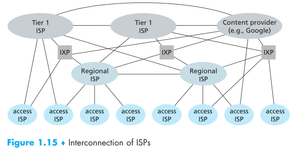
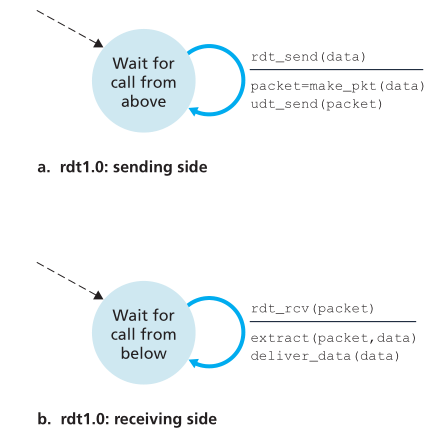
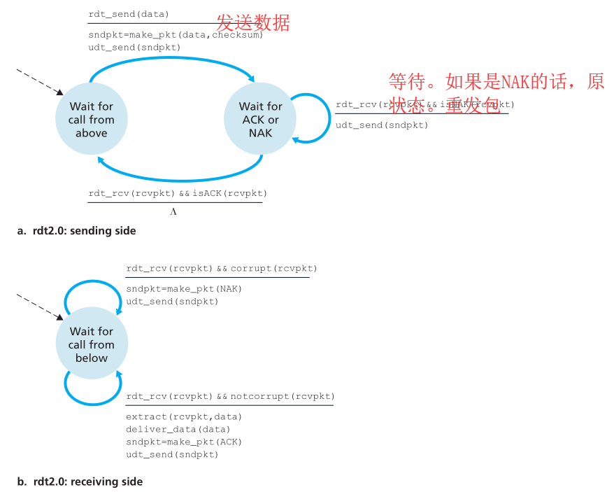
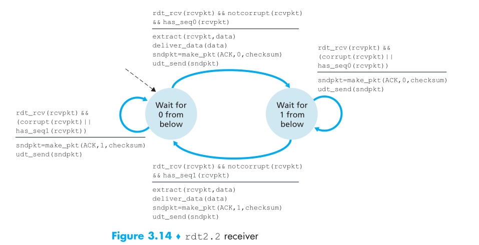

Computer Networking
[TOC]
Chapter 1 Computer Networks and the Internet
1.1 What Is the Internet
1.1.1 A Nuts-and-Bolts Description
hosts or end systems
ISP: Internet Services Provider
transmission rate measured in bits/second(b/s)
Packet switching(包交换/分组交换) is a method of grouping data that is transmitted over a digital network into packets. Packets are made of a header and a payload. Data in the header are used by networking hardware to direct the packet to its destination where the payload is extracted and used by application software.
Packet switches include routers(路由) and link-layer switches(数据链路层的交换机)
TCP(Transmission Control Protocol )
IP(Internet Protocol)
1.1.3 What Is a Protocol?
A protocol defines the format and the order of messages exchanged between two or more communicating entities, as well as the actions taken on the transmission and/or receipt of a message or other event.(协议定义了信息在两个网络实体间交换信息的格式以及一系列操作)
1.2 The Network Edge(网络边缘)
也就是hosts.靠近用户端那部分.也叫端系统
1.2.1 Access Networks
DSL(Digital subscriber line)
Cable
FTTH(Fiber to the home)
Wifi
3G and LTE
1.2.2 Physical Media
Twisted-Pair Copper Wire:双绞线
Copper Wire:同轴电缆
Fiber Optics:光纤
Terrestrial Radio Channels:陆地无线电信道
Terrestrial Radio Channels:卫星无线电信道
1.3 The Network Core
1.3.1 Packet Switching
time $L/R$
Store-and-Forward Transmission（存储转发）
存储转发：在往下一个地方发包之前，先收到完整包再说,于是传输时延=$N\frac{L}{R}$
1.3.2 Circuit Switching(电路交换)
FDM(频分复用:Frequency-Division Multiplexing)
TDM(时分复用:Time-Division Multiplexing)
1.3.3 A Network of Networks(网络的网络)

IXP(Internet Exchange Point)
1.4 Delay,Loss,and Throughput in Packet-Switched Networks(分组交换网络的延迟\丢包和吞吐量)
1.4.1 Delay
Delay Types:
Nodal processing delay(节点处理时延)
The time required to examine the packet’s header and determine where to direct(检查包头，决定发送方向)queuing delay(排队时延)
transmission delay(传输时延)
将大小L的分组推出需要的时间 T=L/R （R=10Mbps,100Mbps之类的）,与路由器距离无关propagation delay(传播时延)
取决线路速率，等于距离/线路速率
于是
1.4.2 Queuing Delay and Packet Loss
$a(pkt/s):$the average rate at which packets arrive at the queue.也就是每秒几个包到达
$La (b/s)$ the average rate at which bits arrive at the queue.
Traffic intensity(拥塞强度)
La/R>1:到达大于发出,队列不断增加
La/R<=1:取决到达的性质,如果是周期性到达，比较均匀的话（L/R秒一个）。那么不用排队。如果是同时La个数据涌来的话，只有第一个不用排队
Packet Loss
If a packet arrived with finding a full queue,then i no way to go,and will be loss because the router drop the packet
(就是队列满了，包没地方去了，路由就干掉它了，然后就产生loss)
1.4.3 End-to-End Delay(端到端时延)
前面是点到点的时延，基于节点分析的
现在端到端
suppose there are $N - 1$ routers between the source host and the destination host
suppose for the moment that the network is uncongested (so that queuing delays are negligible) 忽略了排队时延
1.4.4 Throughput in Computer Network
example 1
bottleneck link(瓶颈链路)
$F: $File’s Size
throughput:$min\{R_ 1 , R _2 , …, R _N \}$
$T=F/min\{R_ 1 , R _2 , …, R _N \}$
example 2
$R_s>>R_c$
similarly: throughput=$min\{R_s,R_c\}$
If in the situation of Figure 1.20(b),R/10 is also need to be considered.
If $R=5Mbps,R_s=2Mbps,R_c=1Mpbs$,then $Throughput=500Kbps$
1.5 Protocol Layers and Their Service Models
1.5.1 Layered Architecture
Protocol Layering
top-down approach(自顶向下方法)
Application Layer
SMTP\FTP\HTTP
packet of information at the application layer as a messageTransport Layer
TCP\UDP
transport-layer packet as a segmentNetwork Layer
IP protocol
network-layer packets known as datagramsLink Layer
refer to the link layer packets as framesPhysical Layer
1.5.2 Encapsulation(封装)
Chapter 2 Application Layer
2.1 Principles of Network Applications
2.1.1 Network Application Architecture
C\S,P2P
2.1.2 Processes Communicating
Addressing:IP and Port
2.1.3 Transport Services Available to Applications
TCP
2.2 The Web and HTTP
HTTP依靠TCP协议
2.2.2 Non-Persistent and Persistent Connections
Non-Persistent
例如请求10个图像
对于每个图像要
1.向80端口建立连接
2.发送请求
3.服务器响应并发送文件
4.服务器通知中断连接(不过等到文件传输完后才会真正断开)
Persistent
连接后不中断
2.2.3 HTTP Message Format
请求信息
POST和GET的区别
get参数通过url传递，post放在request body中。
get请求在url中传递的参数是有长度限制的，而post没有。
get不安全,因为参数直接暴露,只能进行url编码,而且记录会保留
POST发送2个TCP包,GET是1个
2.2.4 Cookies
cookie technology has four components: (Cookies的4个部件)
在请求和回应包头里加cookies行
(1) a cookie header line in the HTTP response message;
(2) a cookie header line in the HTTP request message;
文件保存在用户本地并由浏览器保管，还有一个后端数据库在服务器上
(3) a cookie file kept on the user’s end system and managed by the user’s browser;
(4) a back-end database at the Web site
如图，首次进入时，没有记录，于是服务器在后端数据库上窗口一个新条目，保存用户信息，然后回应包中加上cookies。然后用户会保存cookies在本地,然后再请求一次获取正常网页。下次请求（只要没清理cookies)，请求头会带上相应cookies,然后服务器可以直接返回信息
2.2.5 Web Cache
Web cache—also called a proxy server.
加速原理:
就是连了个proxy server.一个client发送请求先过Proxy server,这个server看看它有没有需要的数据，有的话就HTTP返回。没有的话由他来向目的网站发HTTP请求，并获得回应，之后存在本地，然后发回给client.
所以,不管有没有存有数据都能加速，因为server带宽是很高的
例子
在两个交换机间会有较大的queuing delay
加上proxy server后
2.3 FTP
2.4 Electronic Mail in the Internet
发
SMTP port:25
MIME
收
POP3 port 110
IMAP
2.5 DNS
TLD(Top-level domain)
recursive queries and iterative queries
图中1是递归查询，其他都是迭代查询
理论上任何查询都可以既是迭代也是递归的
DNS Cache
保持解析过的记录到本地。下次不要再重复解析了
2.5.3 DNS Records and Messages
(Name, Value, Type, TTL)
Type:
A:主机名到IP (relay1.bar.foo.com, 145.37.93.126, A)
NS:主机名到DNS服务器 (foo.com, dns.foo.com, NS)
CNAME:主机到主机 (foo.com, relay1.bar.foo.com, CNAME)
MX 邮件服务器
TTL为记录生存时间
2.6 P2P
C/S下
=>
P2P下每个客户端都上传
1.一开始只有服务器有文件,服务器上传$F/u_s$
取下界
tracker
随机选择peer,把peer列表(包含IP)，发给需求者。尝试TCP建立连接
每个peer都有文件块子集，如果需求者有L个不同peer那么能获得L个块列表,然后向没有的块发请求（通过TCP）
rarest first:决定请求哪些块的技术。选择最稀缺（peer中副本最少的块）
DHT：Distributed Hash Table
在不需要服务器的情况下，每个客户端负责一个小范围的路由，并负责存储一小部分数据，从而实现整个DHT网络的寻址和存储.DHT的出现用于解决当tracker服务器不可用时，P2P客户端依然可以取得某个资源的peer。DHT解决这个问题，是因为它将原来tracker上的资源peer信息分散到了整个网络中
2.6.2 BitTorrent
tracker:
Chapter 3 Transport Layer
IP:Best-effort
不确保，只负责交付segment3.3 UDP
UDP,使用二元组(ip，port)标识,无连接。
应用层控制更加精细，能容忍丢失，不希望过分延迟
无需建立连接
首部开销少
UDP是端到端
checksum计算方法:
把所有16位的字相加，如果遇到进位，则将高于16字节的进位部分的值加到最低位上,然后取反
3.4 Principles of Reliable Data Transfer(可靠数据传输规则)
3.4.1 Building a Reliable Data Transfer Protocol
RDT1.0 (完全可靠的信道，Perfectly Reliable Channel)

RDT2.0 (存在位错误),使用了ARQ(Automatic Repeat reQuest,自动重传请求)
加上3种机制:
1.Error detection(差错检测)
2.Receiver feedback(反馈)
3.Retransmission(重传)

也叫stop-and-wait protocol
RDT2.1 在2.0上改进。使用duplicate ACKs
RDT2.2
RDT3.0 多了定时器，能处理timeout
流水线:pipelined sending
Two basic approaches toward pipelined error
recovery can be identified: Go-Back-N and selective repeat.
Go-Back-N(Sliding-Window protocol)
sender响应3个事件
1.上层调用：先检查发送窗口有没有满，满的话返回上层
2.收到ACK，采用累计确认
3.timeout,
receiver:
收到一个序号为n的包。如果有序的话，就为n个包发个累计确认。其他情况全部丢弃为最近按序接受的包发送ackSelective Repeat
3.5 TCP
TCP is said to be connection-oriented
connection
1.设置sequence 2,设置 buff
MSS:Maximum Segment Size 一般由 Maximum Transmission Unit设置
Reliable Data Transfer
Connection Management
Congestion Control
1.slow start
窗口从1开始，指数增加，发生loss又变成1，然后重新开始,并且ssthresh(慢启动阈值)/2。大于ssthresh后进入拥塞避免
2.Congestion Avoidance
1）收到一个ACK时，cwnd = cwnd + 1/cwnd
2）当每过一个RTT时，cwnd = cwnd + 1
是一个线性上升的算法
3.Fast Recovery
该算法认为，收到3个重复AKC,说明网络不是很糟糕,
cwnd = sshthresh + 3 * MSS （3的意思是确认有3个数据包被收到了）
重传Duplicated ACKs指定的数据包
如果再收到 duplicated Acks，那么cwnd = cwnd +1
如果收到了新的Ack，那么，cwnd = sshthresh ，然后就进入了拥塞避免的算法了。
也就是不是从1开始线性增长，而是从1/2cwnd+3MSS
KeyWord
4
RTT(round-trip time)
Traffic intensity
Encapsulation
DDOS
FQDN(绝对域名)
Kademlia
Best-effort
demultiplexing
Selective Repeat
ABR:available bit-rate
ssthresh
Fast retransmit
Routing
Forwarding
Head-of-the-line blocking
MTU
NAT
UPnP
ICMP
Link-State
Distance Vector Algorithm
OSPF
BGP
RIP
IS-IS
Poisoned Reverse
hot-potato routing
ARP
tunnel
Bellman-Ford Equation
Network Edge
Network Core
HFC(Hybrid Fiber Coaxial)
Circuit switching
C/S
B/S
Web Cache
Cookies
tit-for-tat
optimistically unchoke &Choking
Socket
MSS
MAC
CBR&ABR
HOL
DHCP
Link-State&Vector Distance
IPV6 AND IPV4
OSPF AND RIP
BGP
Reverse Path Forward
flooding& controled flooding
PIM
share tree & source tree
ICMP Pinglo25
BitTorrent
best effort